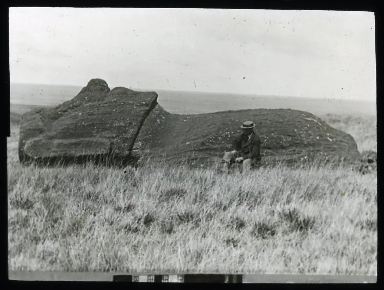
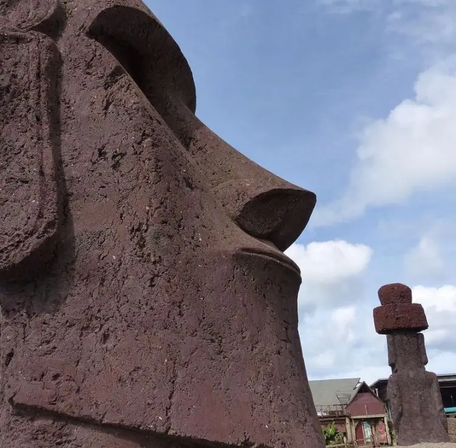
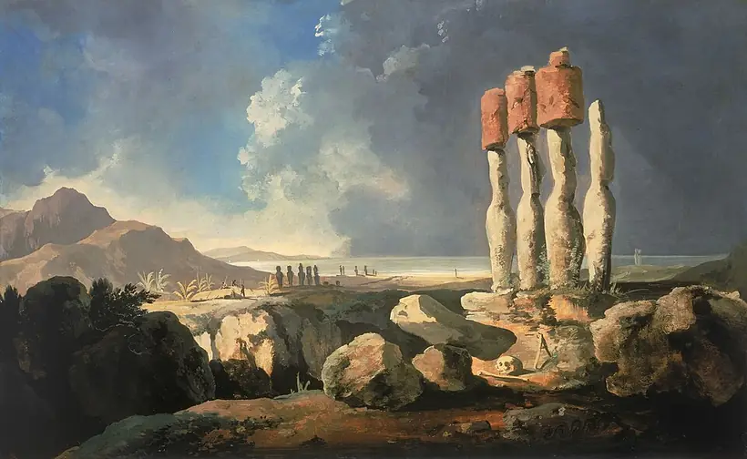

The Bermuda Triangle
The Triangle is a region of the western North Atlantic, loosely bounded by Miami, Bermuda and Puerto Rico, in which ships, aircraft and people are said to have vanished without explanation. It is the model case for this archive because its construction is fully documented.
Maps, diagrams and images






How the story was built
- 1950
An Associated Press story by Edward Van Winkle Jones clusters several losses in the region — the first press treatment.
- 1964
Vincent Gaddis publishes “The Deadly Bermuda Triangle” in Argosy, giving the region its name.
- 1974
Charles Berlitz’s bestseller The Bermuda Triangle turns it into an international industry, complete with Atlantis and lost technology.
- 1975
Larry Kusche publishes The Bermuda Triangle Mystery — Solved, checking each incident against the original reports. He finds them inaccurate, exaggerated or unverified, and finds no excess of losses compared with any other heavily travelled ocean region.
What actually explains the losses
NOAA’s own fact page is refreshingly flat about it. The majority of Atlantic tropical storms and hurricanes pass through the area, and before modern forecasting those storms sank ships routinely. The Gulf Stream produces rapid and sometimes violent weather changes. The Caribbean has many islands and large areas of shallow, treacherous water. And the region sits near the agonic line, where magnetic north and true north align — which historically confused compass navigation.
Flight 19 — five Navy torpedo bombers lost in December 1945 — is real and remains a genuine tragedy. It is also a case of a flight leader becoming disoriented, refusing to switch to a backup compass, and leading the group out to sea, followed by a rescue seaplane lost in bad weather.
The popular “methane bubbles capsize ships” idea is a real physical phenomenon in principle, but as BBC Science Focus notes, USGS studies record no significant methane releases in the area in the past 15,000 years.
A loose definition. A boundary that can be redrawn lets any incident be included. A vessel lost near the Azores, or north of Bermuda, can be pulled in after the fact.
Base-rate blindness. The Triangle is one of the busiest shipping and flying corridors on Earth. More traffic will always produce more losses. The correct comparison is losses per vessel-mile, and when that comparison is made, the anomaly disappears.
The Nazca Lines
The geoglyphs of the Nazca Desert in southern Peru — hundreds of figures, lines and trapezoids scraped into the desert pavement — are genuinely mysterious in the sense that their purpose is still argued. They are not mysterious in the sense that they require aliens.
What they probably were
- Water and fertility ritual. The strongest scholarly reading, associated with Johan Reinhard, is that the lines led to places where rituals were performed to obtain water and agricultural fertility. Many of the animal figures are motifs associated with rain and water, and appear on Nazca pottery too.
- Paths and gathering places. A 2026 study argues that earlier hillside geoglyphs sit on trails and were visible from long distances — markers for routes and camps, which later became places for gathering and feasting.
- Astronomical alignment. Proposed by Paul Kosok in 1941 and developed by Maria Reiche over forty years. A 2021 re-analysis found that only a small number of geoglyphs had plausible alignments to a star or solstice — not enough to support the calendar hypothesis as a whole.
- Not aliens. Gerald Hawkins and others examined and rejected the ancient-astronaut interpretations in the late 1960s and early 1970s.
The honest position is that several purposes probably coexisted over centuries: processional paths, water rituals, markers, and designs meant to be seen by deities from above rather than by people.
Genuinely open cases
It would be a mistake to conclude that everything is solved. There are real artefacts and events with no consensus explanation — the Voynich manuscript’s script and language, the 1959 Dyatlov Pass deaths, the fate of the Roanoke colony. Each has a substantial literature and competing hypotheses.
The distinction that matters is not “explained vs. unexplained”. It is “explained vs. unexplainable”. Most mysteries in this archive are the first. The ones that stay open are open because the evidence is genuinely insufficient — not because a force is at work.
The rule this page teaches
Before accepting that something is unexplained, check three things: whether the primary reports say what the retelling says; whether the comparison group is fair; and whether the boundary was fixed before or after the data. Almost every celebrated mystery fails at least one.
Sources for this page
- NOAA Ocean Service, “What is the Bermuda Triangle?”oceanservice.noaa.gov/facts/bermudatri.html
- Britannica, “Bermuda Triangle”britannica.com/place/Bermuda-Triangle
- BBC Science Focus, “How science solved the Bermuda Triangle mystery”sciencefocus.com/science/bermuda-triangle
- Geographical, “Unraveling the mystery of the Bermuda Triangle”geographical.co.uk
- National Geographic, “Bermuda Triangle: location, legend, and facts”nationalgeographic.com
- Live Science, “Why were the Nazca Lines built?” — the 2026 route-marker studylivescience.com
- National Geographic, “Why the Nasca lines are among Peru’s greatest mysteries”nationalgeographic.com
- HISTORY, “Nazca Lines”history.com/articles/nazca-lines
Open resources on this topic
- BookOur Lady's unknown mysteries — Doherty, Catherine de Hueck, 1896-1985 · 1979 (Internet Archive, free to read)
- BookExploring the unknown: mysteries in American archaeology — Sharon S. McKern · 1972 (Internet Archive, free to read)
- BookExploring the unknown; mysteries in American archaeology — McKern, Sharon S · 1972 (Internet Archive, free to read)
- PapersOpen-access articles: DOAJ · PubMed Central · Internet Archive Scholar
- BooksPublic-domain and borrowable copies: Open Library · Project Gutenberg · Google Books
More images
Cite this page
Momin, S. (2026). Unknown Mysteries. The Larger World Archive. https://drsamonline.github.io/LARGE_GLOBE/mysteries.htmlMomin, Sohil. “Unknown Mysteries.” The Larger World Archive, 2026, https://drsamonline.github.io/LARGE_GLOBE/mysteries.html.Momin, Sohil. “Unknown Mysteries.” The Larger World Archive, 2026. https://drsamonline.github.io/LARGE_GLOBE/mysteries.html.@misc{unknown2026mysteries,
author = {Momin, Sohil},
title = {Unknown Mysteries},
year = {2026},
howpublished = {The Larger World Archive},
url = {https://drsamonline.github.io/LARGE_GLOBE/mysteries.html},
note = {Last reviewed 20 November 2026}
}Last reviewed 20 November 2026 · Corrections policy · this page is not peer reviewed